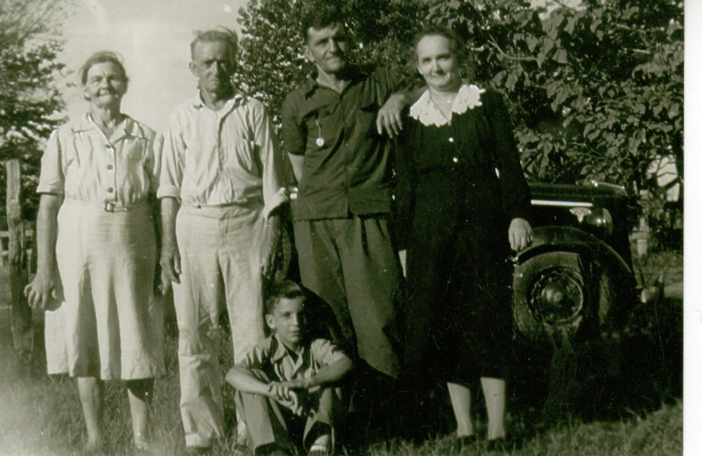

Search every page
Try:
Not here yet?
Most families’ stories aren’t on the site yet. That’s where you come in. Share your family’s story, or see where Angelina County’s family records are.

Hardy and Nettie Snowden with George, Rosa and a grandson. Family photoType a family name, a place or a word. You’ll see every page where it shows up, and whether the family is in the 1976 county history.
Most families’ stories aren’t on the site yet. That’s where you come in. Share your family’s story, or see where Angelina County’s family records are.